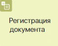
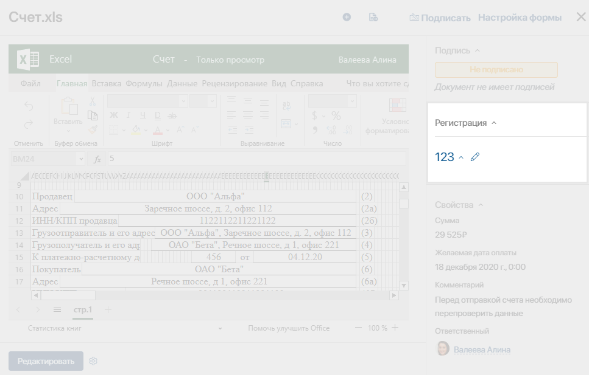
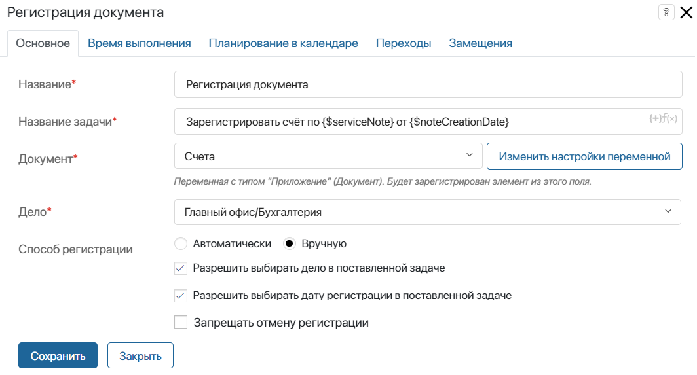
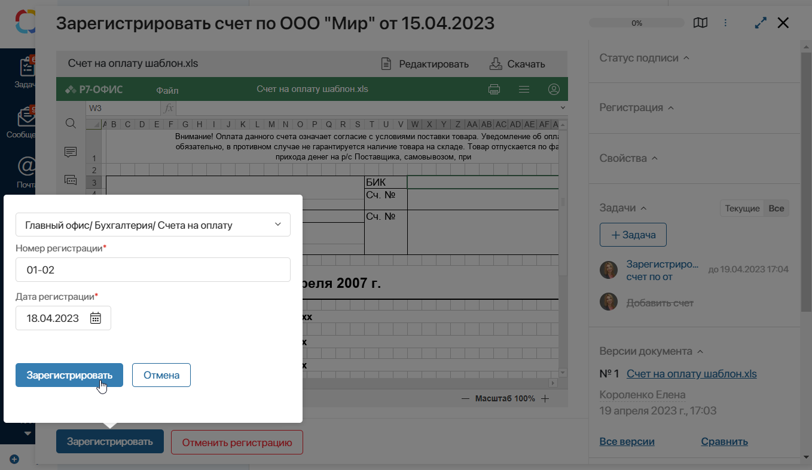
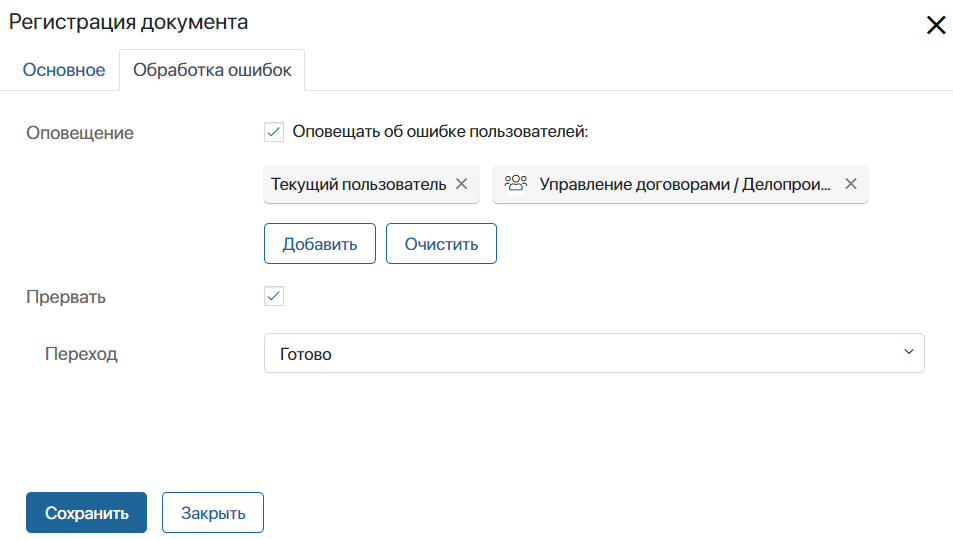

Блок Регистрация документа используется для того, чтобы в ходе бизнес-процесса автоматически или вручную присвоить регистрационный номер документу. Регистрация доступна только для приложений типа Документ.
Для примера возьмём приложение Счета. При оформлении счёта в ходе бизнес-процесса сотрудник вносит в систему необходимые данные — файл счёта-фактуры, сумму, желаемую дату оплаты, комментарий и т. д. Создаётся новый элемент приложения Счета.
Затем счёту автоматически или вручную присваивается регистрационный номер. Данные отобразятся в карточке счёта.

Настройка блока
Перед началом моделирования бизнес-процесса убедитесь, что в компании создана номенклатура дел, добавлено место регистрации и настроено дело. Также проверьте, что в настройках приложения типа Документ, для которого создаётся процесс, включена возможность регистрировать элементы.
начало внимание
Настраивать регистрацию могут только пользователи, включённые в группу Администраторы.
конец внимание
Далее переходите к настройке бизнес-процесса. На странице процесса на правой панели инструментов откройте вкладку Системные элементы. Перетащите блок Регистрация документа на схему и разместите его там, где в ходе процесса потребуется присвоить документу регистрационный номер.
Дважды нажмите на графический элемент, чтобы открыть настройки, которые будут отличаться в зависимости от выбранного типа регистрации:
- ручная регистрация настраивается на вкладках Основное, Время выполнения, Планирование в календаре, Переходы;
- автоматическая регистрации настраивается на вкладках Основное и Обработка ошибок.
Вкладка «Основное»
На этой вкладке выбирается способ регистрации и задаются основные настройки:

- Название* — укажите название блока, которое будет отображаться на схеме процесса;
- Название задачи* — задайте детальное описание задачи, которое исполнитель увидит в списке задач или на её карточке. В название можно включить контекстные переменные, нажав на значок {+} в правом углу поля. Кроме того, вы можете добавить в шаблон функцию DateTime(). Для этого нажмите на значок f(x);
- Документ* — откройте выпадающий список и выберите переменную из контекста бизнес-процесса, хранящую приложение типа Документ, файл из которого необходимо зарегистрировать. Если переменной в контексте процесса еще нет, нажмите кнопку Создать новую переменную;
- Дело* — укажите место регистрации и дело, созданное в настройках номенклатуры, в котором будет регистрироваться документ;
- Способ регистрации — выберите тип регистрации:
- Вручную — на текущего исполнителя или группу исполнителей, указанных в зоне ответственности, будет назначена задача с формой регистрации документа. При этом способе регистрации доступны дополнительные опции:
- Разрешить выбирать дело в поставленной задаче — опция позволяет при выполнении задачи регистрации выбрать, в каком деле зарегистрировать документ. Обратите внимание, указать можно только те дела, которые добавлены в настройках регистрации приложения. Опция удобна, если в одном приложении хранятся документы различных видов, которые должны регистрироваться в разных делах, например, счета и накладные;
- Разрешить выбирать дату регистрации в поставленной задаче — опция позволяет при выполнении задачи указать дату регистрации документа. По умолчанию ставится текущая дата;

- Запрещать отмену регистрации — если опция включена, на форме задачи нельзя отменить регистрацию. Для продолжения процесса пользователю нужно выбрать дело и зарегистрировать документ.
- Автоматически — документ зарегистрируется автоматически в деле, путь до которого вы указали в предыдущем поле Дело*. При этом способе регистрации доступна дополнительная опция:
- Использовать дату резервирования при регистрации — при включённой опции дата регистрации документа заменяется на дату резервирования номера регистрации. Для этого убедитесь, что в настройках выбранного дела и настройках приложения разрешено резервирование регистрационного номера документа.
Вкладка «Время выполнения»
При регистрации документа вручную на этой вкладке вы сможете ограничить время выполнения задачи пользователем, а также указать сотрудников, которым придёт оповещение о нарушении заданных сроков.
Такие настройки можно задать для всех блоков типа Задача. Подробней о том, как это сделать, читайте в статье «Задача».
Вкладка «Планирование в календаре»
Эта вкладка появится, если срок выполнения задачи регистрации вручную ограничен. На ней вы можете включить отображение задачи в календаре исполнителя, чтобы она была завершена в указанные сроки. Подробнее о том, как задать настройки, читайте в статье «Задача».
Вкладка «Переходы»
При выборе способа регистрации Вручную на схеме процесса необходимо использовать два перехода из блока Регистрация документа: один будет являться переходом по умолчанию и предназначаться для подтверждения регистрации, второй — для отмены.
Они настраиваются на вкладке Переходы. Здесь можно отредактировать названия и выбрать цвета кнопок на форме задачи, добавить текст подтверждения и т. д. Чтобы перейти к настройкам, нажмите на название перехода. Подробнее об этом читайте в статье «Переходы».
Вкладка «Замещения»
На этой вкладке вы можете указать переменную, которая управляет переназначением задачи регистрации на сотрудника, замещающего основного исполнителя.
Например, игнорировать замещение можно, если регистрируемый документ содержит конфиденциальные данные, которые не должны быть переданы третьим лицам.
Подробнее о том, как настроить игнорирование замещения, читайте в статье «Задача».
Вкладка «Обработка ошибок»
Вкладка появляется при выборе способа регистрации Автоматически. На ней вы можете указать, по какой ветке направится процесс при возникновении ошибки, а также выбрать пользователей, которым придёт оповещение об ошибке.

После того как вы указали все параметры, нажмите кнопку Сохранить.
Начало внимание
Блок Регистрация документа не поддерживается в режиме отладки. Чтобы продолжить исполнение процесса в этом режиме, нажмите на название операции в разделе История и выберите Пропустить шаг.
Конец внимание
Работа пользователей с задачей регистрации
Когда процесс дойдёт до настроенного блока, документ будет зарегистрирован в системе вручную или автоматически, согласно настройкам блока.
При выборе регистрации вручную сотруднику, в чьей зоне ответственности находится блок, придёт соответствующая задача. Если в зоне ответственности указана группа, задача регистрации будет назначена всем входящим в эту группу сотрудникам. Как только кто-то начнет работу по задаче, она исчезнет из списка задач остальных исполнителей.
При автоматической регистрации в качестве сотрудника, зарегистрировавшего документ, будет указан исполнитель, который выполнил предыдущую задачу.